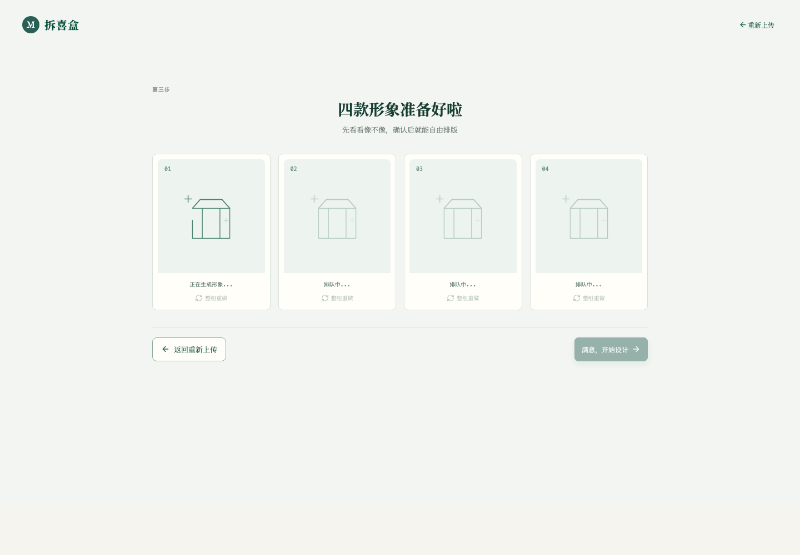

USER GUIDE
把四张照片做成一套专属礼物
这份指南带你从打开邀请链接开始，完成上传、确认人物、编辑包装盒，最后导出可印刷的 A3 文件。整个过程通常只需一部手机或一台电脑。
开始前准备
打开邀请链接后，不需要注册账号。建议先准备好四张照片，再开始制作。
?token= 的邀请链接即可。首次打开后，邀请码会自动保存在当前浏览器中。一次完整的制作体验
-
打开邀请链接
打开链接后会直接进入上传页面。你会看到四个照片位，以及“批量上传”入口。此时无需填写邀请码或登录信息。
你会看到：上传照片 · 四个照片位 -
上传四张照片
依次点击四个照片位选择图片，也可以使用“批量上传”一次选中四张。照片顺序会决定后续人物在包装盒右侧四宫格中的位置。
建议：一张照片对应一位人物
上传页：四个照片位都替换成自己的照片后，“开始生成 4 款形象”即可点击。 -
开始生成 Q 版人物
确认预览图无误后，点击开始制作。系统会上传照片并生成一组风格统一的四位 Q 版人物。页面会显示生成进度，请耐心等待。
你会看到：正在为你变出四款形象
生成中：四张人物卡会依次完成。请保持页面打开，不要重复提交。 -
确认四张人物图
生成完成后，进入确认页查看四张独立人物图。它们已经完成背景移除，可以直接用于包装盒和小卡排版。满意后点击“开始设计”。
你会看到：四款形象准备好啦
确认页：四张卡片完成后，“满意，开始设计”会变为可用状态。 -
编辑每一张包装盒
在“2D 展开图”中，左侧可切换盒子并编辑赠言、纪念日期、日历标题、脚注、字体和颜色。盒子 1、4 显示为小卡，名称可自定义输入。
你会看到：正面 · 右侧 · 背面 · 左侧
排版工作台：左侧编辑内容和素材，中间实时查看包装盒展开图，顶部可撤销、重做和导出。 -
调整人物与装饰
点击包装盒正面的人物，出现控制框后即可拖动、缩放和旋转。也可以从左侧素材库添加装饰或文字，并使用撤销、重做调整效果。
小技巧：人物太靠边时，缩小后再移动 -
查看专属小卡效果
切换到“专属小卡”查看四张成品组合效果。这里会显示本次生成的四位人物，以及你为小卡 01、小卡 04 设置的名称。
你会看到：四张专属小卡，一套礼物 -
确认并导出
点击“确认小卡效果”，再点击右上角“导出 4 张 A3”。浏览器会下载四张包装盒展开图 PDF，可交给印刷店印刷后裁切、折叠和粘贴。
最终产物：4 张 A3 印刷 PDF
编辑时可以做什么？
| 区域 | 你可以编辑的内容 | 体验提示 |
|---|---|---|
| 正面 | 对应人物图的位置、大小、角度；添加装饰和文字 | 点击人物后可拖动、缩放、旋转。 |
| 右侧 | 自动展示本次生成的四位人物 | 当前盒子的人物会更突出，方便识别这一张包装盒属于谁。 |
| 背面 | 纪念日期、日历标题、日历脚注、字体、标题颜色 | 日期会自动生成对应月份的日历。 |
| 左侧 | 赠言文字、装饰和新增文字 | 赠言较长时会自动换行，建议控制在简短的祝福语长度。 |
| 专属小卡 | 小卡 01、小卡 04 的名称 | 输入后会同步显示在小卡组合预览中。 |
照片选择建议
推荐
正面或半身照、人物清楚、光线均匀、主体占画面较大、背景干净。
也可以使用
不同场景照片。系统会尽量统一四位人物的 Q 版风格。
尽量避免
多人合照、人物被大面积遮挡、严重逆光、过度模糊或主体非常小的图片。
上传顺序
四张照片会固定对应四位人物。上传前先想好每张照片在礼物中的排列顺序。
常见问题
| 情况 | 怎么处理 |
|---|---|
| 打开页面提示邀请码无效 | 请确认从收到的完整邀请链接打开，不要遗漏链接中的 ?token=... 部分。 |
| 上传后无法开始制作 | 检查四个照片位是否都已选择图片，并确认网络正常。 |
| 生成时间较长 | 保持页面打开并等待进度完成。不要反复刷新或重复点击开始制作。 |
| 人物位置不合适 | 进入工作台，点击正面人物，用控制框拖动、缩放和旋转即可调整。 |
| 不小心改错了 | 使用顶部“撤销”恢复上一步，或用“重做”回到之后的状态。 |
| 换设备后看不到原来的任务 | 任务与当前浏览器设备关联。请尽量在同一台设备、同一浏览器内完成制作。 |
拿到 PDF 后怎么制作实物？
按 A3 原尺寸打印
打印时选择 A3 纸张和“实际大小 / 100%”，不要勾选自动缩放。
沿实线裁切
沿裁切线剪下展开图，保留所有连接片和折叠区域。
沿虚线折叠
先用尺子或钝头工具压出折痕，再沿折线折叠，边缘会更整齐。
粘贴并成型
在粘贴片上涂胶，按相邻面顺序固定，即可完成一只专属人物盲盒。